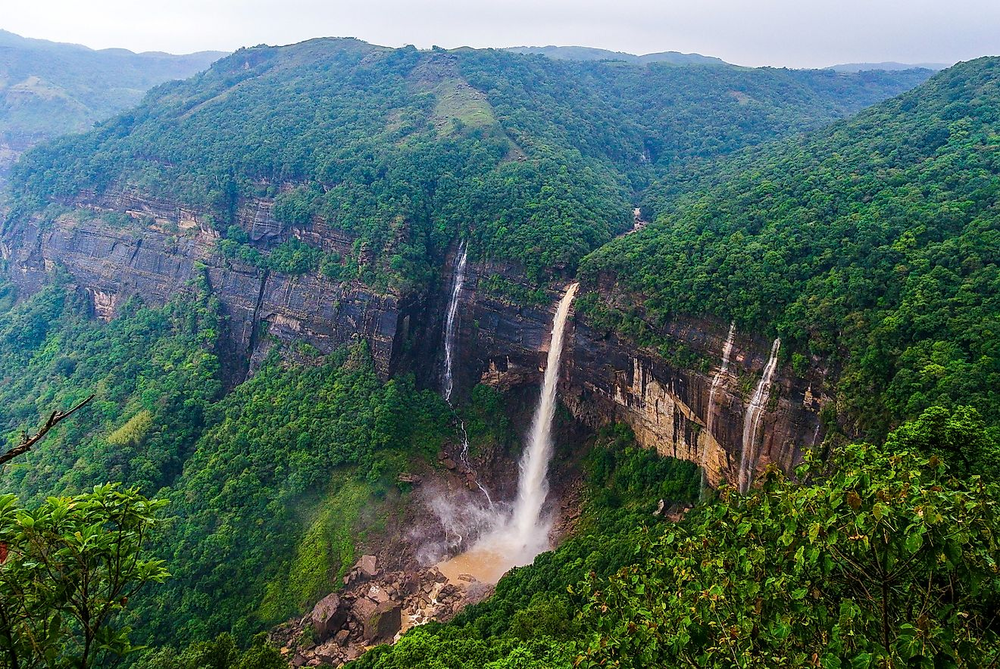

Day 1: The Ascent | Route: Guwahati ➔ Shillong
- Activity: Stop at Umiam Lake for a boat ride. Check into your hotel in Shillong.
- Stay: Shillong (Police Bazar or Laitumkhrah).
Meghalaya, meaning "Abode of Clouds" in Sanskrit, is a mesmerizing green plateau separated from the Assam valley by abrupt slopes. It is home to three major tribes—the Khasis, Garos, and Jaintias—who follow a unique matrilineal system where lineage and inheritance are traced through women, and the youngest daughter (*Khatduh*) inherits the ancestral property.
The state is a geological wonder, famous for its ancient limestone caves and the ingenious Living Root Bridges. These bridges, hand-woven from the roots of rubber trees (*Ficus elastica*) by the tribes over centuries, stand as a testament to the harmony between man and nature.
Some Interesting Facts about Meghalaya:
Shillong: The Scotland of the East
|

|
|
 |
Cherrapunji (Sohra): Land of Waterfalls
|
Dawki & Shnongpdeng: The Crystal River
|

|

|
Nongriat: The Root Bridges
|
1. By Air
|
2. By Rail
|
|
3. By Road
The drive from Guwahati to Shillong is one of the best in India.
|
Choose Your Vibe
The Classic Cloud CircuitBest for: Families, couples, and first-time visitors.Day 1: The Ascent | Route: Guwahati ➔ Shillong
Day 2: City of Rock | Route: Shillong Local
Day 3: Wettest Place | Route: Shillong ➔ Cherrapunji (Sohra)
Day 4: Crystal Waters | Route: Sohra ➔ Dawki ➔ Mawlynnong
Day 5: The Grand Canyon | Route: Laitlum Canyons
Day 6: Departure
|
The Trekker's ParadiseBest for: Adventurers, hikers, and nature enthusiasts.Day 1: Arrival | Route: Guwahati ➔ Shillong
Day 2: The David Scott Trail | Route: Mawphlang ➔ Lad Mawphlang
Day 3: The 3500 Steps | Route: Sohra ➔ Nongriat
Day 4: Rainbow Falls | Route: Nongriat Exploration
Day 5: Caving Adventure | Route: Maswsmai/Krem Mawmluh
Day 6: Riverside Camping | Route: Sohra ➔ Shnongpdeng
Day 7: Departure
|
| Time | Best For |
|---|---|
| October to April | Winter/Spring: This is the only time the Dawki river is crystal clear. Weather is cool and pleasant. |
| June to September | Monsoon: Best for witnessing the waterfalls in their full glory. However, it rains continuously, and views may be foggy. |
| November | Cherry Blossom Festival: Shillong turns pink with blooming cherry blossoms. |
Important things to know before you pack your bags.
Shillong has narrow roads and heavy traffic jams, especially near Police Bazar. Walk whenever possible. If you have a flight to catch from Guwahati, leave Shillong at least 4-5 hours in advance.
The famous photos of boats floating on invisible water are only possible in Winter (Oct-Mar). In the monsoon, the river turns muddy due to rain. Plan accordingly.
You are visiting the wettest place on earth. Even in the dry season, showers can happen. Always carry a poncho or umbrella and water-resistant shoes.
While Shillong accepts cards/UPI, remote areas like Nongriat, Dawki, and small roadside dhabas run on cash. ATMs are scarce outside the capital.
Women hold a high status in Meghalayan society. It is one of the safest states for solo female travelers. Be respectful and polite to locals.
Meghalaya is predominantly Christian. On Sundays, almost everything (shops, taxis, markets) is closed or operates at very low capacity. Plan your Sundays for nature walks or relaxation, not shopping.